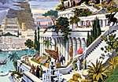
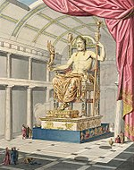
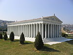
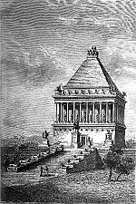
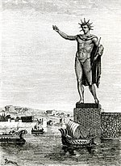
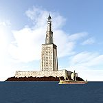

Сім чудес світу, або Сім чудес Стародавнього світу — список найбільш прославлених пам'яток античної культури часів Ойкумени, з якого до наших часів збереглась лише Піраміда Хеопса. Складання списку найславетніших поетів, філософів, полководців, великих царів, як і пам'яток архітектури і мистецтва — традиційний «малий» жанр грецької елліністичної поезії і свого роду вправа в риториці. Сам вибір числа освячений найдавнішими уявленнями про його наповненість, закінченість і досконалість, число 7 вважалося священним числом бога Аполлона (Семеро проти Фів, Сім мудреців і т. і.). Подібно збірникам висловлювань знаменитих мудреців, збіркам анекдотів і розповідям про дива, твори про Сім чудес світу були популярні в античну епоху і включали в себе описи найграндіозніших, найпрекрасніших або в технічному сенсі найбільш вражаючих будівель і пам'ятників мистецтва. Ось чому їх називали чудесами, в той час як в списку відсутні багато справжніх шедеврів стародавньої архітектури та мистецтва — Акрополь в Афінах з творінням Фідія — статуєю Афіни, Парфенон, прославлена статуя Афродіти Кнідської роботи Праксітеля і т. і. Згадки про Сім чудес з'являються у творах грецьких авторів, починаючи з епохи еллінізму. Їх треба було знати вже в школі, про них писали вчені й поети. У тексті одного єгипетського папірусу, що являв собою свого роду навчальний посібник, згадуються обов'язкові для заучування імена знаменитих законодавців, живописців, скульпторів, архітекторів, винахідників, найбільші острови, гори і річки і, нарешті, сім чудес світу. «Відбір» чудес відбувався поступово, і одні чудеса змінювали інші.
1640 року француз Д. С. Бессі відшукав у бібліотеці Ватикану невеличкий рукопис грецького філософа Філона Візантійського, що, ймовірно, вперше в III столітті до н. е. вжив у своєму творі це словосполучення.
Пізніше за Філона про дивовижні архітектурні досягнення писали і автор 37 томів «Природничої історії» Пліній Старший, і римський поет Марціал, і грецький географ Павсаній. Були також інші автори. Їх списки різнились між собою. Одні вважали такими стіни стародавнього Вавилону і Колізей, інші також згадували міст через річку Євфрат. Остаточно список утвердився лише у XVIII столітті.
| Об'єкт | Зображення | Час створення | Місце,сучасна країна | Творці | Руйнування |
|---|---|---|---|---|---|
| Пераміда Хеопса | |
~2550 до н. е. | Гіза, Єгипет | египтяни | єдине з чудес, що збереглося до наших днів |
| Висячі Сади Семіраміди |  | ~ 600 до н. е. | Вавилон, Ірак | вавилоняни | після I століття до н. е. внаслідок землетрусу |
| Статуя Зевса в Олімпії |  | 435 до н. е., | Олімпія, Греція | греки — скульптор Фідій | V століття, згоріла в пожежі у Константинополі |
| Храм Артеміди в Ефесі |  | 550 до н. е. | Ефес, Туреччина | лідійці, греки, перси | спалений Геростратом близько 360 до н. е. або 262 н. е. (готами) |
| Мавзолей у Галікарнасі |  | 351 до н. е. | Галікарнас, Туреччина | карійці, перси, греки | 1494 року внаслідок землетрусу, зберігся фундамент, фрагменти |
| Колос Родоський |  | між 292 і 280 до н. е. | Родос, Греція | греки | 224 (або 226) до н. е. внаслідок землетрусу |
| Александрійський маяк |  | III століття до н. е. | Александрія (мис Фарос), Єгипет | Династія Птолемеїв | 303 до н. е. — 148 до н. е. внаслідок землетрусу |